Запчасти для Great Wall Poer: что стоит покупать, а что нет
Проверили 66 деталей из вашего списка, 16.10.2026. Ниже — вывод, а сразу за ним — доказательства: у каждой цифры есть снимок страницы, откуда она взята (нажмите на снимок — он откроется крупно). Где снимка нет, это прямо написано.
Главное: из 66 деталей стоит покупать 8
Машин Poer в России немного — около 10 тысяч (Haval продают в десятки раз больше). Поэтому брать весь список нельзя: на дорогие детали спрос — единицы штук в месяц, а дешёвые уже продают десятки магазинов. Но есть 8 деталей, где место для нас есть: либо их почти никто не продаёт, либо у российских магазинов они в несколько раз дороже, чем у зарубежных продавцов, а те везут 2–4 недели. Мы можем привозить быстро, из России. Остальные 58 брать не стоит.
Чего ещё нет: ваших цен. Без них мы видим только, за сколько продаётся, но не за сколько можно купить.
Что стоит покупать
Первыми — детали, которых на Ozon и WB нет. В российских магазинах их 1–3 продавца.
| Деталь | Что мы нашли | Доказательство |
|---|---|---|
| Вакуумный насос (№19) | в наличии в России 3 продавца; на Ozon нашей детали нет; на WB 2 карточки из-за границы, 7 556–7 926 ₽ | карточка и снимки |
| Задний амортизатор (№53) | в наличии 2 продавца по 5 000 ₽; на Ozon и WB детали нет (там только проставки для клиренса — другой товар) | карточка и снимки |
| Выпускной коллектор (№48) | в наличии 1 продавец, 15 000 ₽; на Ozon пусто; на WB 18 528 ₽ из-за границы. Ломается редко — для пробы хватит 1 штуки | карточка и снимки |
Затем — детали, которые россиянам продают из-за границы заметно дешевле. У нас шанс — быстрая доставка: зарубежные везут 2–4 недели. Брать, если ваша цена это позволит.
| Деталь | Россия (в наличии) | Из-за границы | Доказательство |
|---|---|---|---|
| ТНВД (№8) | 57 000–70 000 ₽ | Ozon от 20 331 ₽ | карточка |
| Форсунка (№66) | 13 900–23 820 ₽ | Ozon от 4 826 ₽ | карточка |
| Топливная рампа (№40) | в наличии нет, только под заказ | WB от 7 890 ₽ | карточка |
| Помпа (№12) | 10 000–16 492 ₽ | Ozon от 4 264 ₽ (в основном аналоги) | карточка |
| Масляный радиатор (№43) | 1 продавец, 9 480 ₽ | Ozon 6 796 ₽ — номер у продавца записан чуть иначе, сверить с вами | карточка |
Сколько это продаётся (ориентир, ошибка ~35%): на Ozon за 30 дней — ТНВД 1 шт, рампа 3, помпа 4, форсунка 25. Это маленький рынок, поэтому начинать предлагаем с пробы по 1–2 штуки, а не с большой партии. Продажи подробно — в разделе 3.
Что не стоит покупать и почему
| Что | Почему |
|---|---|
| Масляные и топливные фильтры, тормозные колодки и диски, стойки стабилизатора и другая дешёвая мелочь: втулки, ремни, ролик (всего 21 позиция) | Их продают десятки магазинов: масляный фильтр — 62 продавца, топливный элемент — 38, колодки — 27, диски — 17. Цены низкие, заработок с штуки — сотни рублей. Отдельно возить невыгодно; можно класть в одну коробку к дорогим деталям. |
| Сцепление, цилиндр и шланг сцепления, трос коробки | Нужны только машинам с механической коробкой. Poer в основном с автоматом, механика появилась в 2026 году — таких машин мало. |
| Детали, которых в России почти нет (мочевина AdBlue, вал, маховик, амортизатор с пружиной и др.) | По их номерам нет ни одного продавца: либо не для российских машин, либо номер другой. Сначала уточнить номер у вас. |
| Подвеска, рулевое, ступицы, опоры и др. | Смотрели только российские магазины; причин брать их в первую очередь не нашли. Ozon и WB по ним не проверяли — если захотите, посмотрим. |
Все 66 позиций с решением по каждой — в разделе 4.
Что нужно от вас
- Цена в юанях и минимальный заказ по восьми деталям выше (вопрос 5 в конце).
- Оригинал, аналог или б/у? И подходят ли детали к дизелю 2,0 (вопросы 1–2).
- Есть ли товар на складе и как вы довозите до Москвы (вопросы 4 и 7).
Как только придут цены, посчитаем, при какой закупке деталь выгодна, и скажем, какие брать.
Доказательства
Дальше — всё, на чём стоит вывод: рынок, спрос, карточки деталей со снимками, цены разных площадок, все 66 позиций, вопросы к вам. В конце — словарик простых слов.
1. Рынок: сколько машин и кто конкуренты
Poer начали продавать в России в 2021 году: цена от 2 299 000 ₽, мотор один — дизель 2,0 литра 4D20M, коробка только автомат.
Что это значит: Детали в списке Чжана (с буквами XED в номере) — как раз для этого дизеля. Детали для механической коробки нужны немногим машинам.
Источник: kolesa.ru

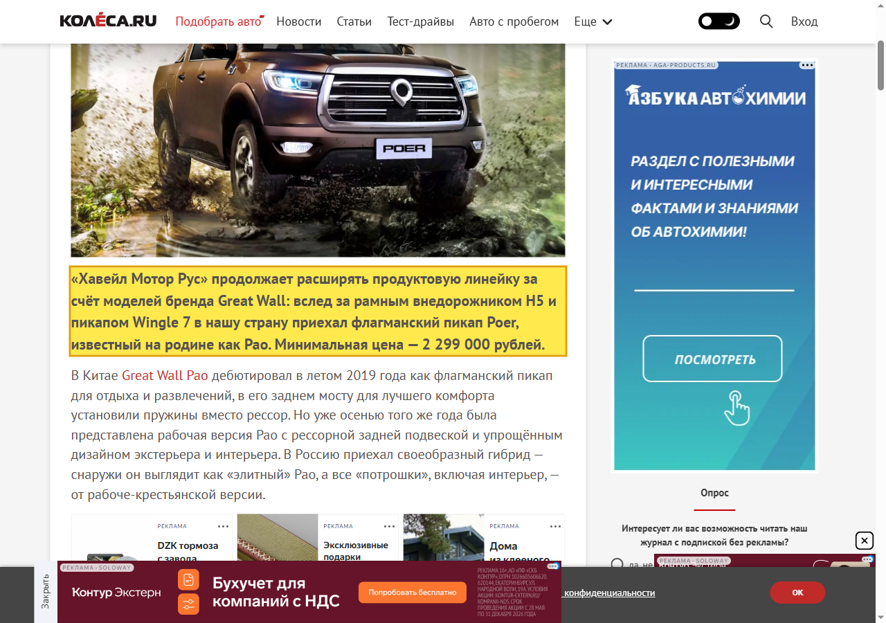
За 2023 год продано 2 937 Poer — третье место среди пикапов.
Источник: Известия

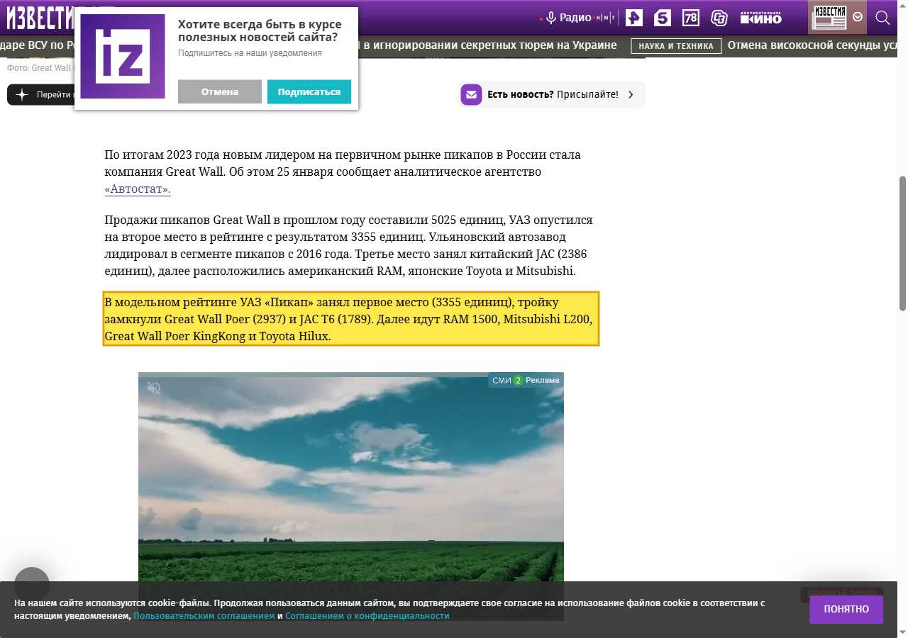
Poer и Kingkong вместе в 2024 году (на дату статьи): 4,9 тыс.
Источник: Autonews, статья от 24.10.2024

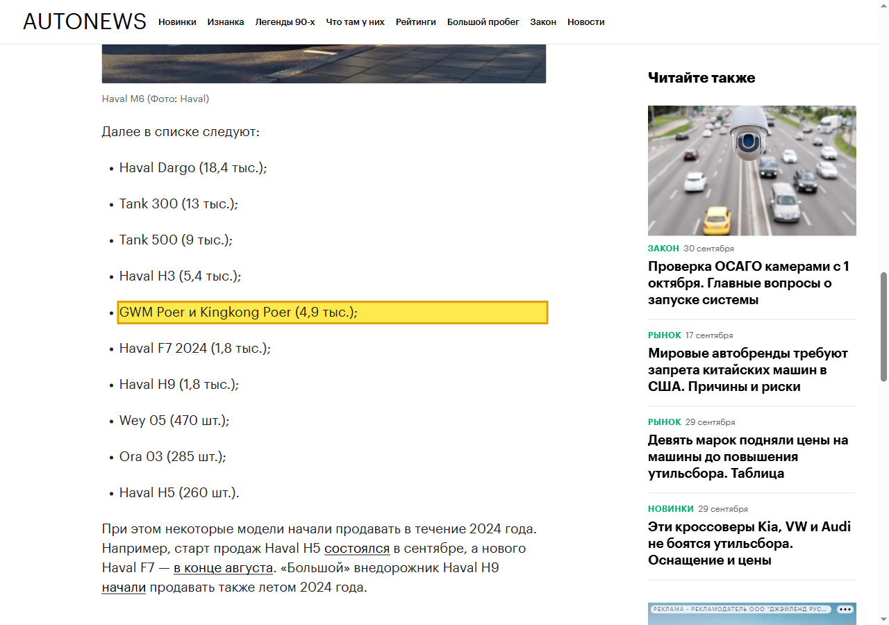
Первое полугодие 2025: 1 165 Poer, на 53% меньше, чем год назад. Продажи падают.
Источник: За рулём

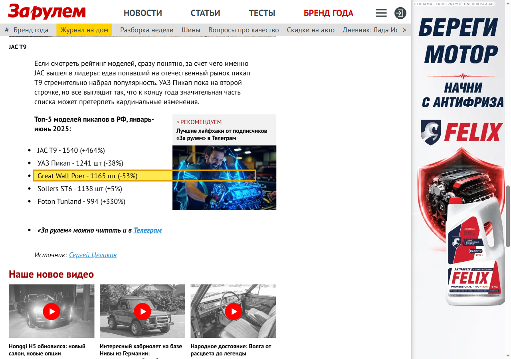
За 2025 год продано 1 938 дизельных Poer. С 2026 года появилась версия с механикой и дизелем 2.0 (163 л. с.).
Источник: Autonews

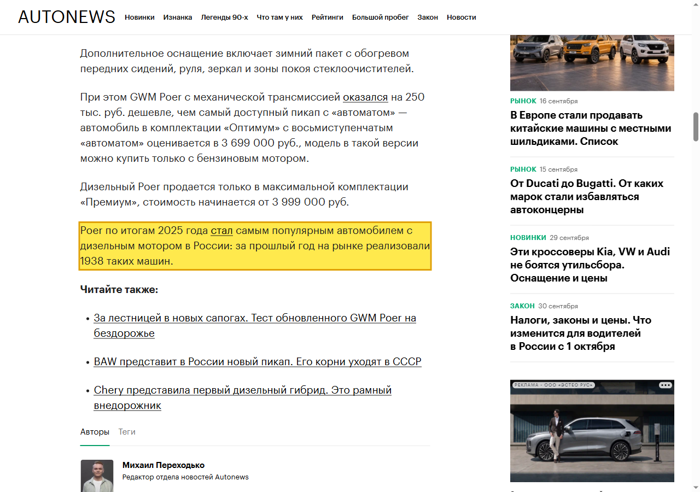
После обновления в 2025 году дизель стал другим: 2,4 литра, 184 л. с.
Что это значит: Новые Poer с мотором 2,4 этим деталям не подходят. Список Чжана — для машин 2021–2024 годов.
Источник: Авто.ру

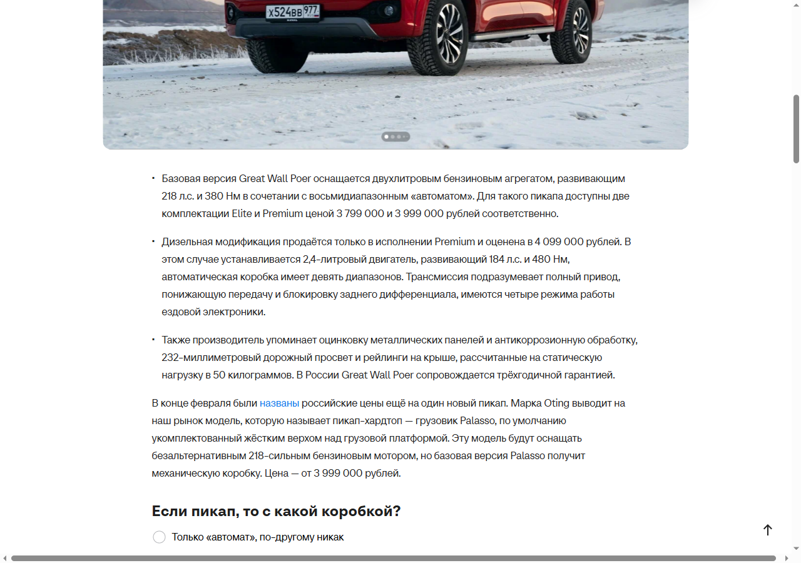
Поставки Poer Kingkong в Россию прекращены, но обслуживание и запчасти компания обещает.
Что это значит: Kingkong в России мало — его позиции из списка в тест не берём.
Источник: Авто.ру

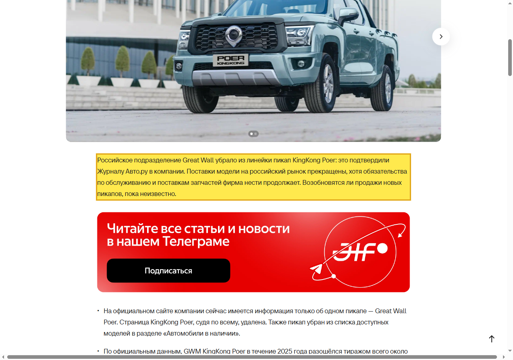
Haval за 2025 год: 173 302 машины — второе место в России.
Что это значит: Это примерно в 90 раз больше, чем дизельных Poer за тот же год (1 938).
Источник: Autonews (данные «Автостата»)

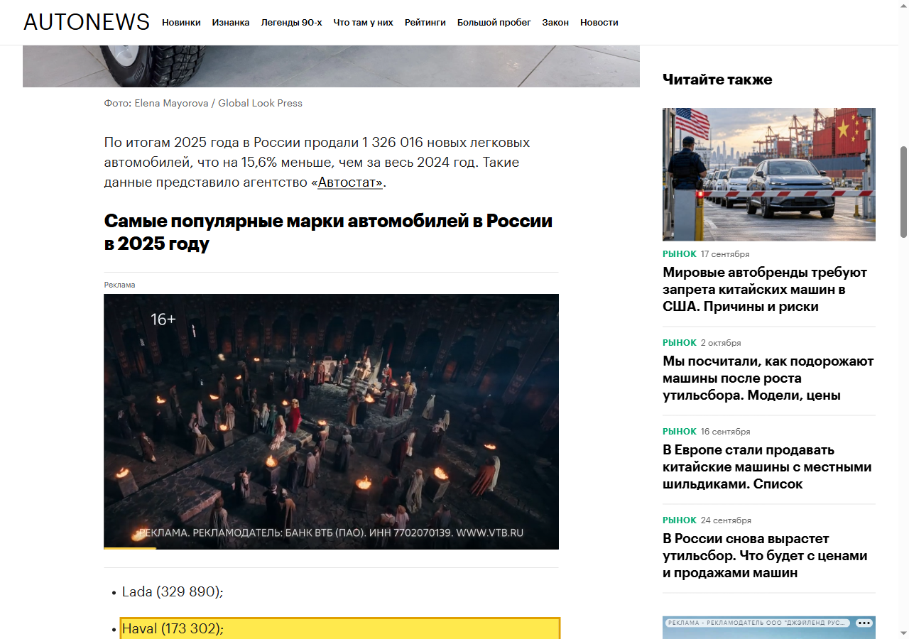
У GWM (завод Haval и Poer) свой склад запчастей в Подмосковье: больше 42 тыс. м² и больше 35 тыс. видов деталей.
Что это значит: Оригинальные запчасти завод возит сам — это сильный конкурент.
Источник: Autonews

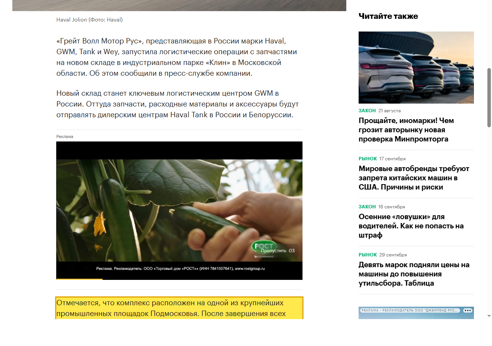
В 2026 году запчасти в России подорожали на 20–40%, есть дефицит.
Источник: За рулём

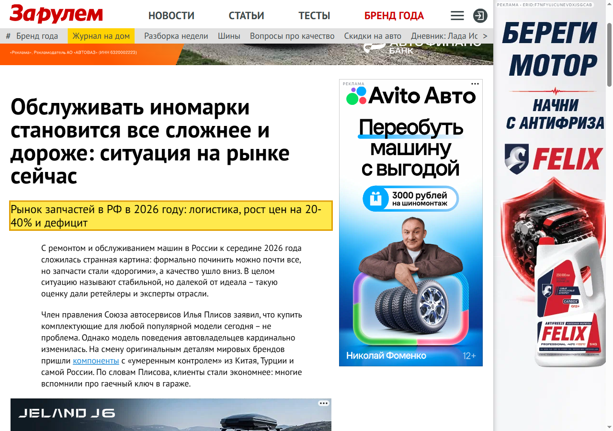
Обязательная маркировка запчастей «Честный знак» пока не введена: эксперимент продлили до 28 февраля 2027.
Что это значит: Потом её введут — к этому надо готовиться.
Источник: Контур

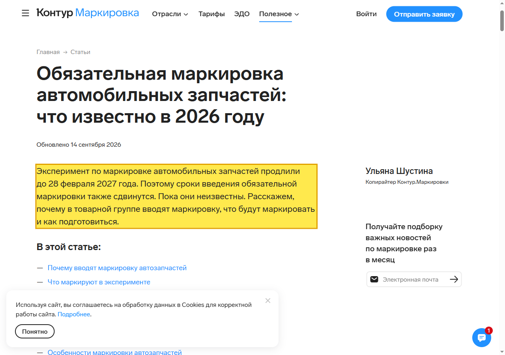
Для кода запчастей 8708 29 100 0: пошлина 5%, НДС при ввозе 22%.
Что это значит: Это пример одного кода. Для каждой детали код и пошлину надо уточнять.
Источник: IFCG (таможенный справочник)

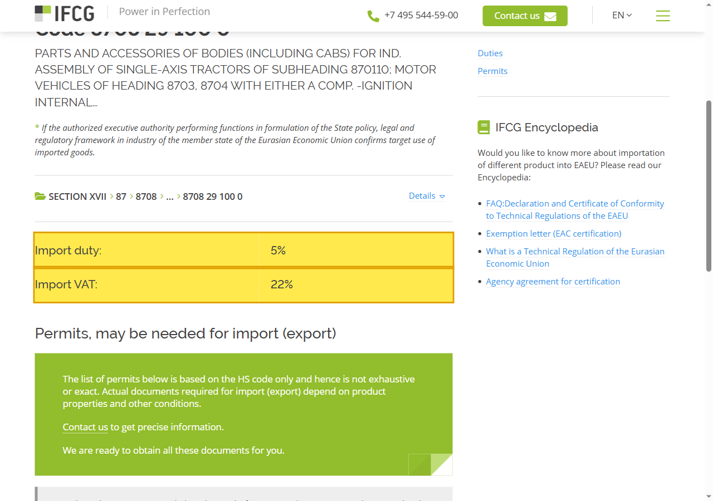
2. Сколько ищут (Wordstat)
Запрос «great wall poer» — 18 921 в месяц.
Интерес к самой машине есть.
открыть в Wordstat (нужен вход в Яндекс)

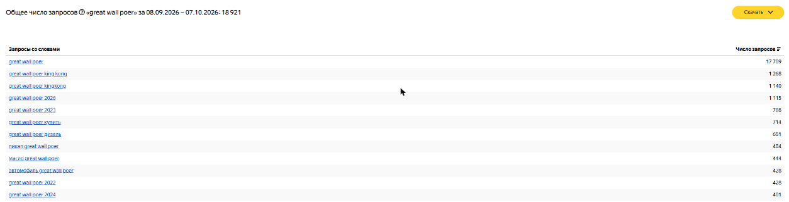
Запрос «запчасти poer» — 154 в месяц.
Запчасти «по названию машины» ищут мало.
открыть в Wordstat (нужен вход в Яндекс)

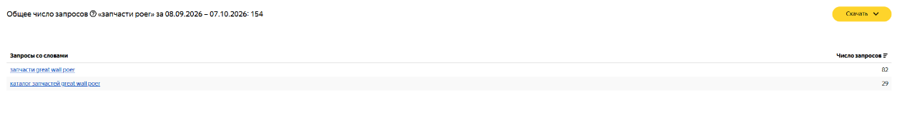
Запрос «запчасти haval» — 3 697 в месяц.
Для сравнения: по Haval — в 24 раза больше.
открыть в Wordstat (нужен вход в Яндекс)

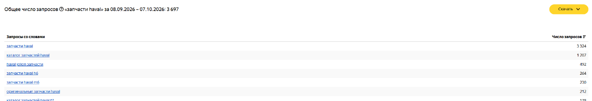
Запрос «poer фильтр» — 938 в месяц.
Чаще всего ищут топливный фильтр.
открыть в Wordstat (нужен вход в Яндекс)

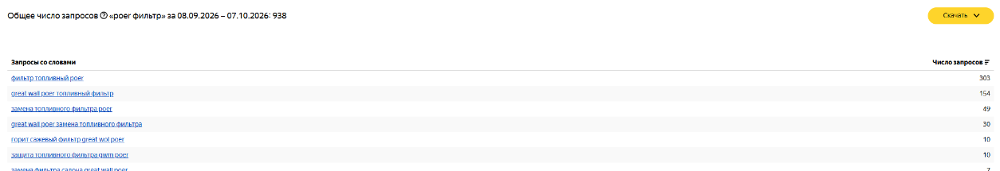
Запрос «gw4d20m (название дизеля)» — 1 299 в месяц.
Со словом «купить» — всего 24.
открыть в Wordstat (нужен вход в Яндекс)

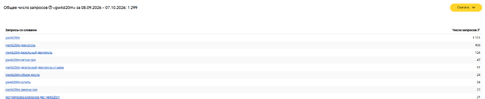
Что это значит: по названию машины запчасти ищут мало. Их ищут по номеру детали — на zzap, Ozon, WB. Поэтому дальше смотрим, сколько продавцов по каждому номеру.
3. Какие детали брать в тест
Правило простое: деталь интересна, если у неё есть спрос, а быстрых предложений в России мало. На Ozon и WB часть деталей продают продавцы из-за границы: цена ниже, но доставка 2–4 недели и больше, а надёжность неизвестна. Быстрая поставка из России — наше преимущество. Для каждой детали ниже — цены в нескольких местах, снимки и вывод.
Кандидаты №1 — на маркетплейсах их нет

№19. Вакуумный насос
Создаёт разрежение (как пылесос), которое помогает водителю жать на тормоз. У дизеля своего разрежения нет, поэтому нужен такой насос.
| Где | Что видно | Доказательство |
|---|---|---|
| Магазины в России (zzap.ru) | в наличии: 3 продавца · 4 500–22 000 ₽ под заказ: 47 продавцов · 3 894–26 911 ₽ |
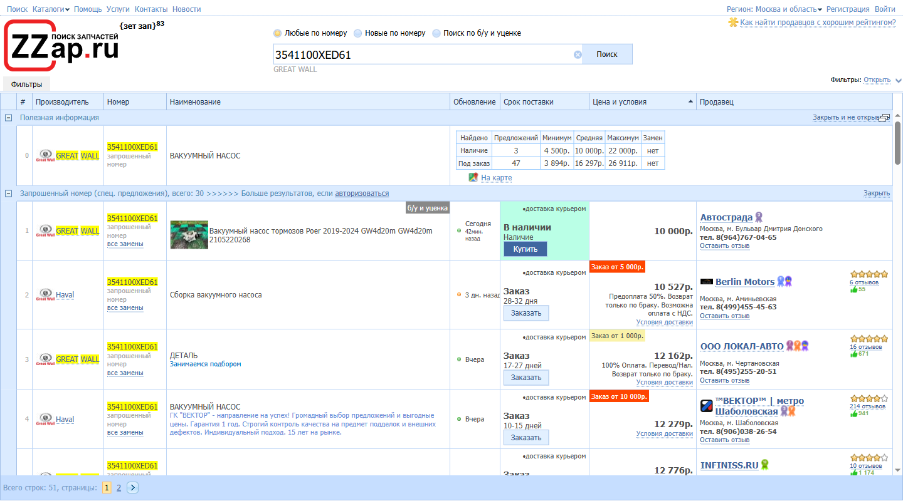 |
| Ozon | Нашей детали нет. По номеру нашлась одна карточка, и та — другой, электрический насос для Haval (3 933 ₽). | 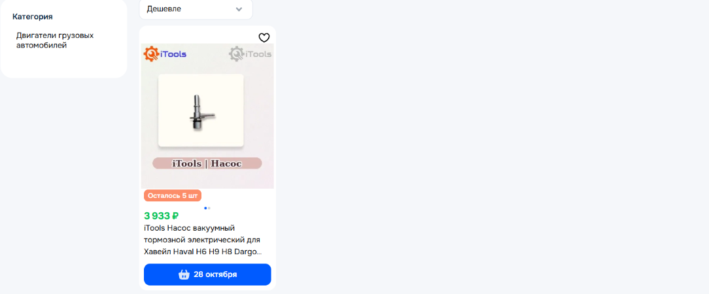 |
| Wildberries | 2 карточки из-за границы: 7 556 и 7 926 ₽. | 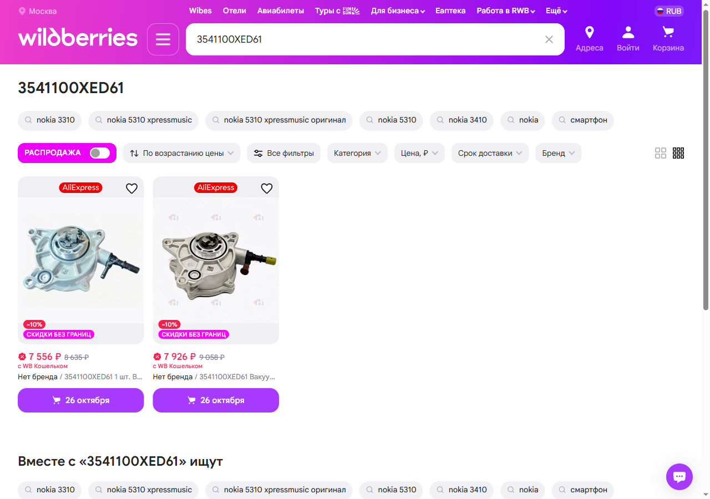 |


Вывод: Свободное место: в наличии в России всего 3 продавца, на Ozon детали нет. Интересная позиция — просим вашу цену.

№53. Задний амортизатор
Гасит раскачку задней части машины на кочках. Меняют парой (2 шт.), чаще у тех, кто возит груз.
| Где | Что видно | Доказательство |
|---|---|---|
| Магазины в России (zzap.ru) | в наличии: 2 продавца · 5 000 ₽ под заказ: 31 продавец · 6 924–24 130 ₽ |
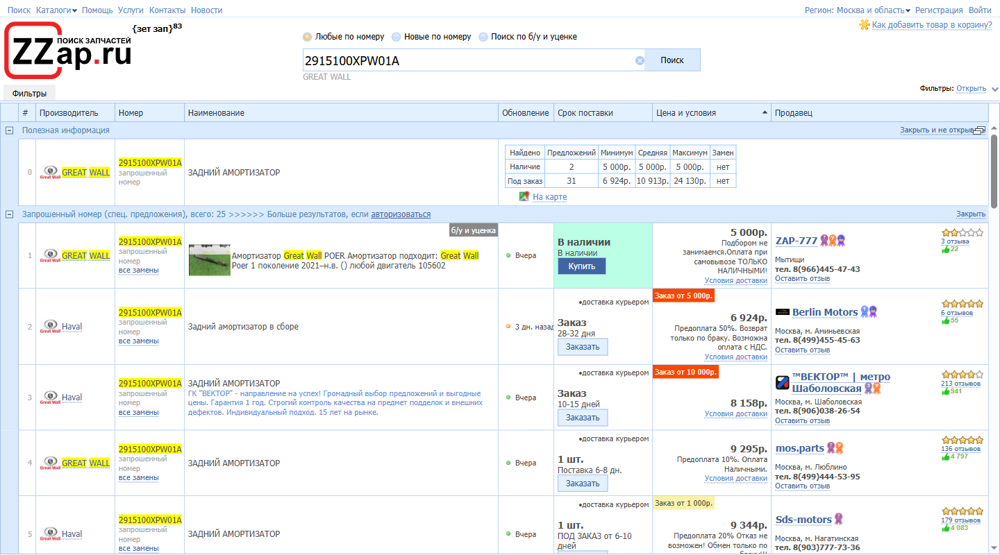 |
| Ozon | Нашей детали нет. По номеру Ozon показывает только проставки для увеличения клиренса на Tank и Haval — это другой товар. | 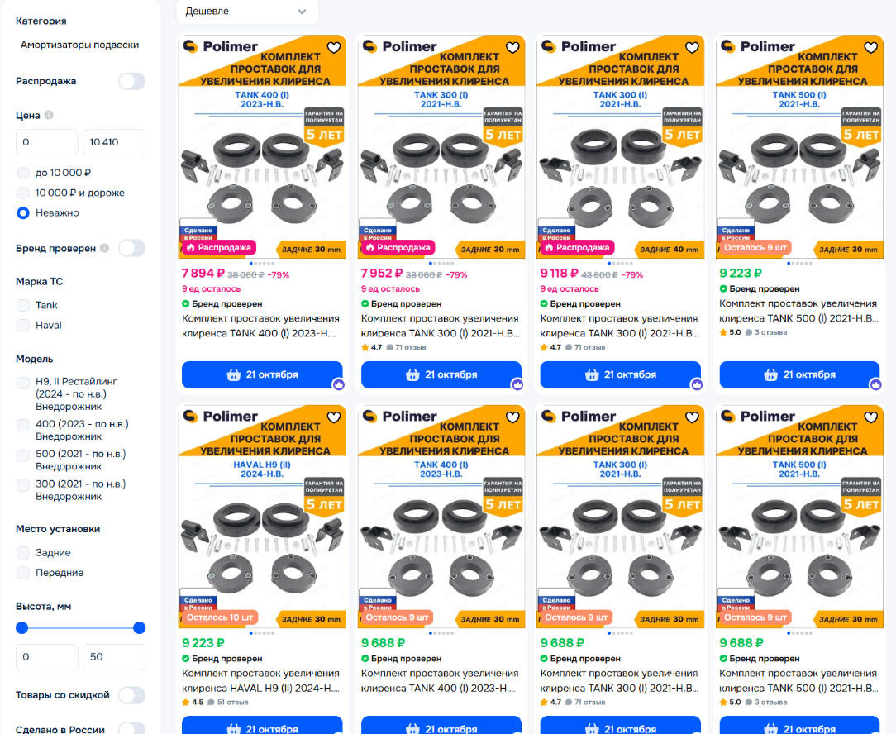 |
| Wildberries | Нет: по номеру WB показывает посторонние товары. | 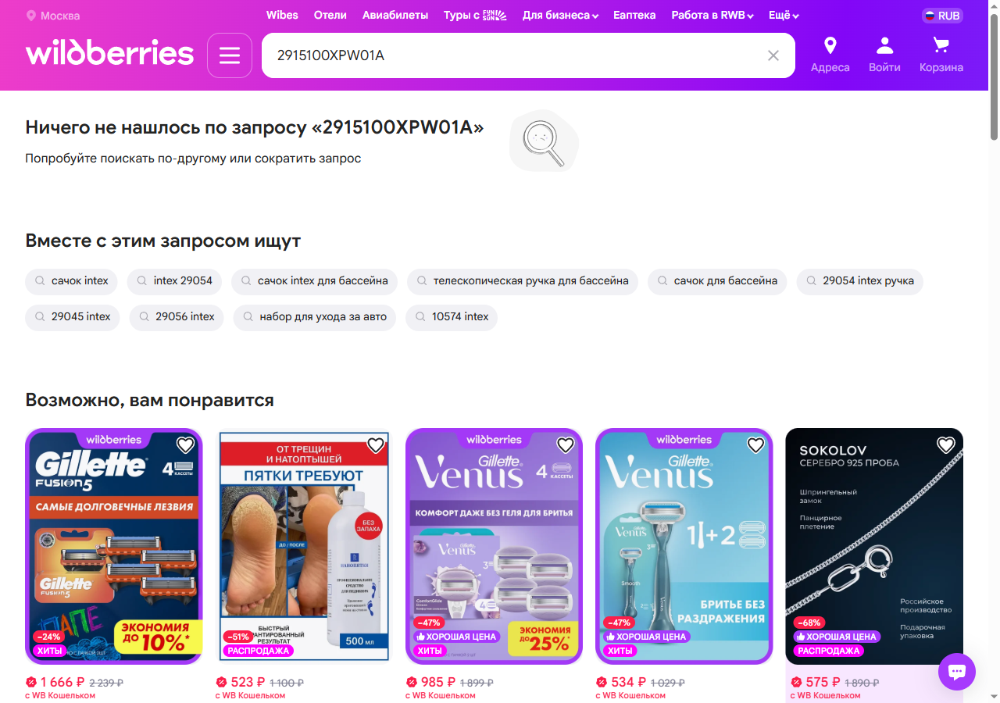 |


Вывод: Свободное место: в наличии в России 2 продавца по 5 000 ₽, на маркетплейсах детали нет. Интересная позиция — просим вашу цену.

№48. Выпускной коллектор
Чугунная труба, которая собирает горячие выхлопные газы из двигателя и ведёт их к турбине. Меняют, когда трескается.
| Где | Что видно | Доказательство |
|---|---|---|
| Магазины в России (zzap.ru) | в наличии: 1 продавец · 15 000 ₽ под заказ: 107 продавцов · 6 714–13 560 ₽ |
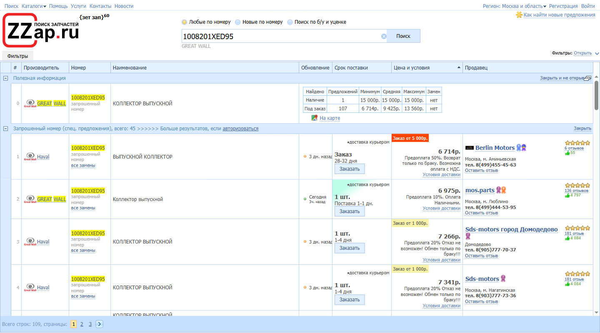 |
| Ozon | Ничего нет: Ozon пишет «Ничего не нашлось». | 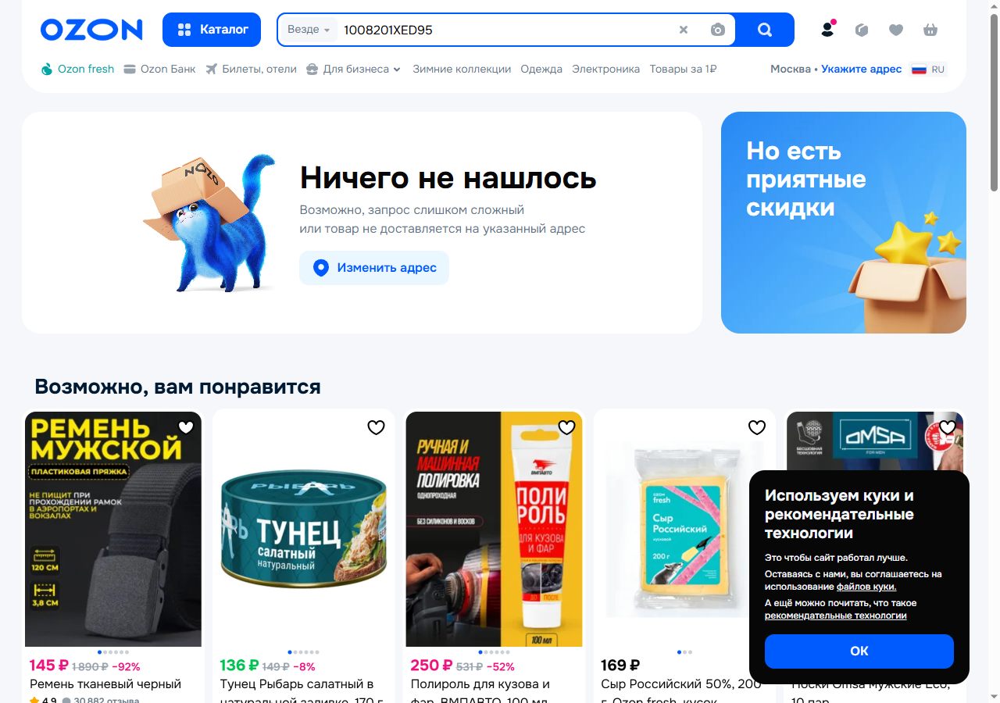 |
| Wildberries | 1 карточка из-за границы: 18 528 ₽. | 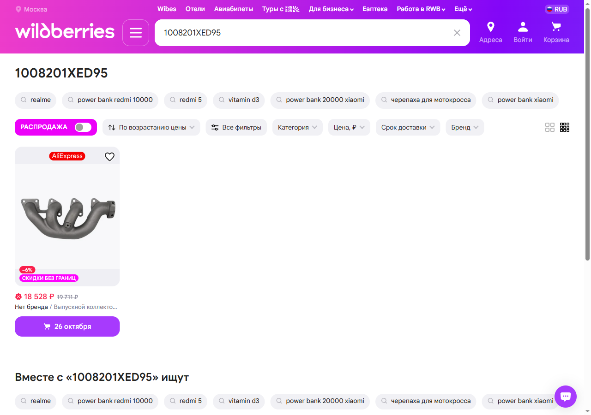 |


Вывод: Почти свободное место: в России в наличии 1 продавец за 15 000 ₽. Ломается редко, для пробы достаточно 1 шт. — просим вашу цену.
Кандидаты: на маркетплейсах есть предложения из-за границы

№43. Масляный радиатор (маслоохладитель)
Охлаждает моторное масло жидкостью из системы охлаждения. Если внутри появляется трещина, масло смешивается с антифризом, и деталь меняют.
| Где | Что видно | Доказательство |
|---|---|---|
| Магазины в России (zzap.ru) | в наличии: 1 продавец · 9 480 ₽ под заказ: 216 продавцов · 2 307–14 236 ₽ |
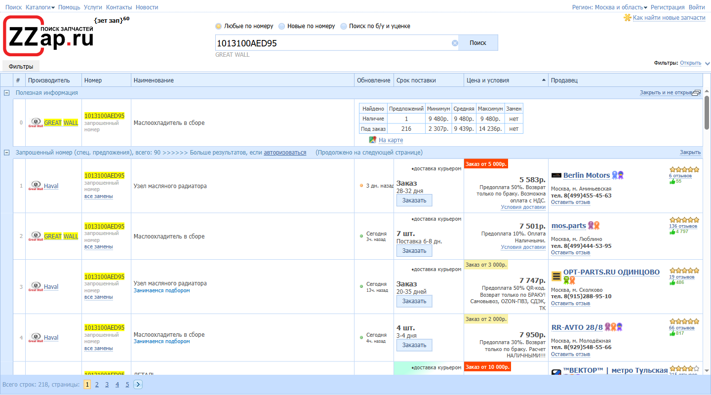 |
| Ozon | Точно нашей детали (номер 1013100AED95) нет — по этому номеру Ozon ничего не показал. Но по названию продают очень похожую: 6 796 ₽, номер у продавца 1013100XE95, в названии «подходит для Great Wall…»; и ещё одну за 4 692 ₽ с номерами 1013100XEC01 и 1013100AEC01 (тот же ряд цифр, другое окончание). Та же это деталь или другая версия — по снимкам не доказать: номера различаются. Проверить можно только по номеру у Чжана или по фото детали. | 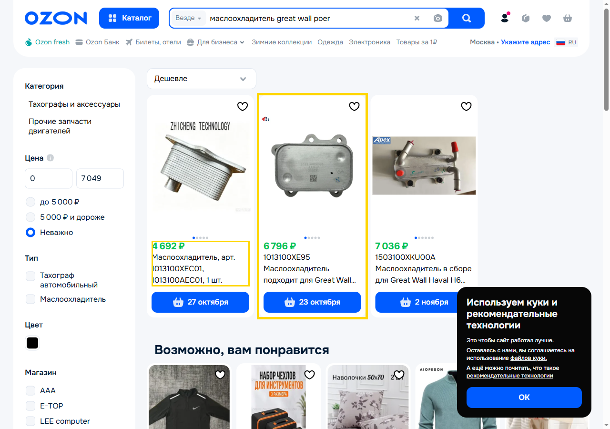 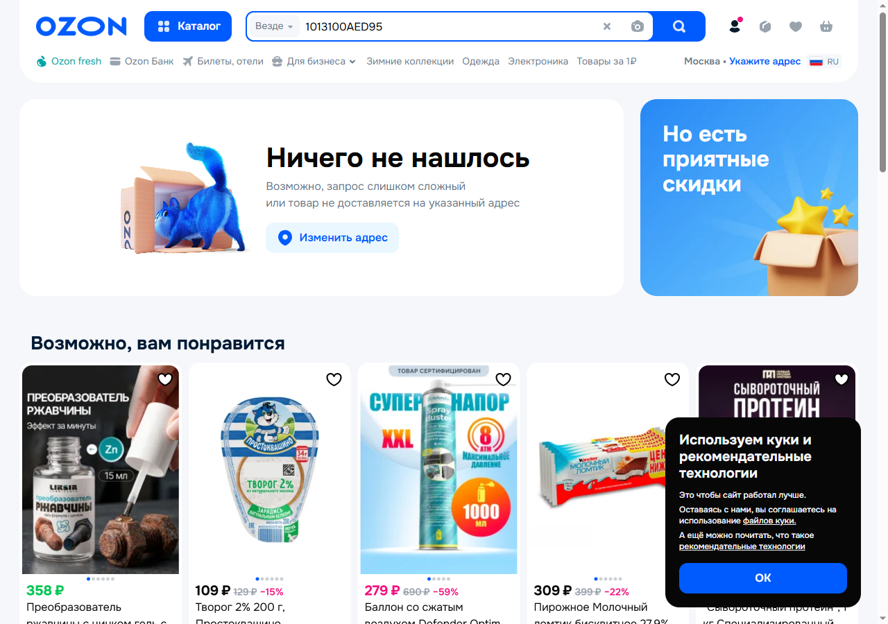 |
| Wildberries | Нет: по номеру WB ничего не показывает. | 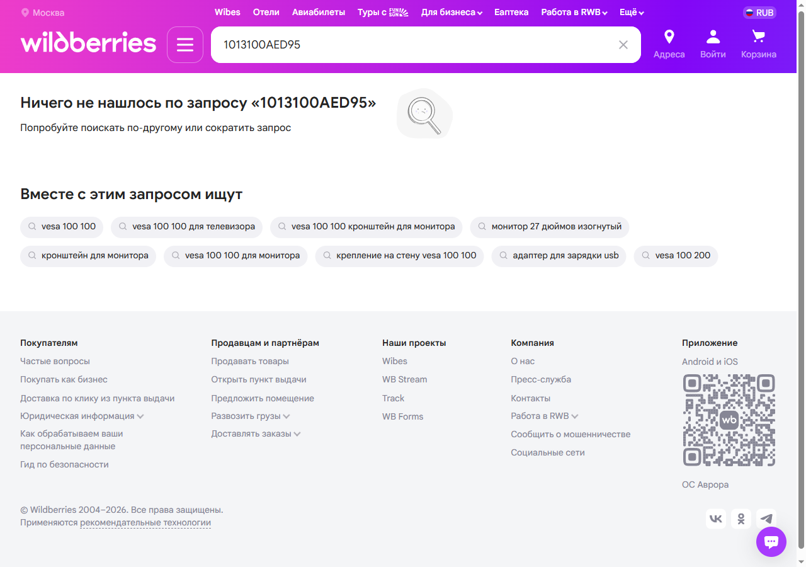 |


Вывод: Продают: на Ozon 6 796 ₽ (номер у продавца записан чуть иначе), на Авито 10 730–12 500 ₽. Интересная позиция — просим вашу цену.

№8. ТНВД (топливный насос высокого давления)
Качает дизельное топливо в двигатель под очень высоким давлением. Самая дорогая деталь топливной системы.
| Где | Что видно | Доказательство |
|---|---|---|
| Магазины в России (zzap.ru) | в наличии: 3 продавца · 57 000–70 000 ₽ под заказ: 65 продавцов · 39 030–229 477 ₽ |
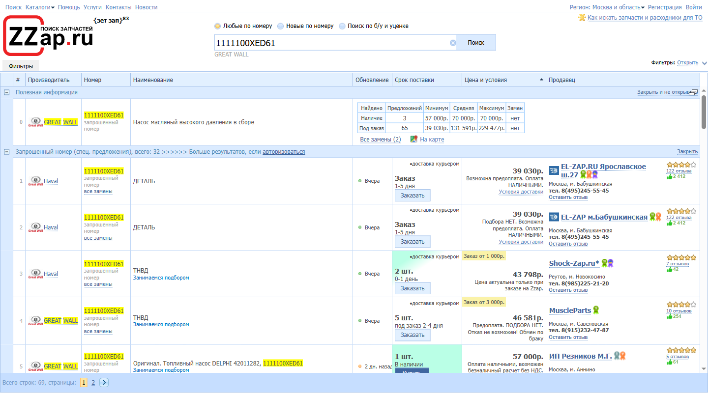 |
| Ozon | От 20 331 ₽, весь разброс 20 391–68 042 ₽. Доставка через 2–4 недели — товар едет из Китая. | 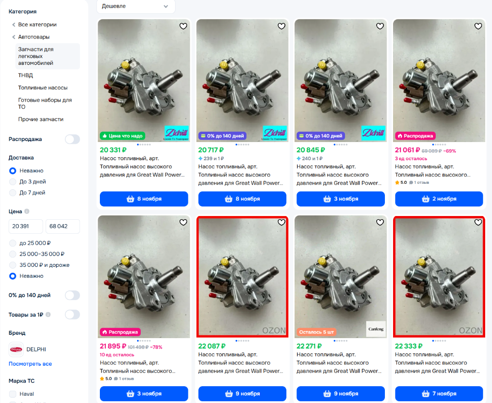 |
| Wildberries | От 29 975 ₽, карточки с пометкой «AliExpress». | 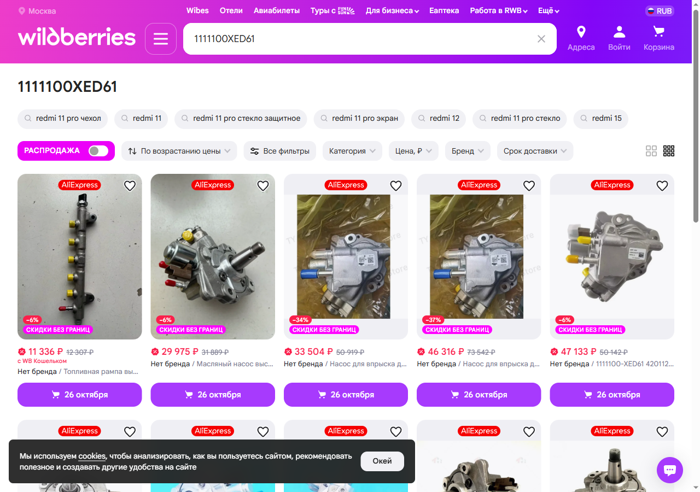 |


Вывод: Российские магазины держат цену 57 000–70 000 ₽ (в наличии). На Ozon от 20 331 ₽ предлагают продавцы из-за границы, доставка 2–4 недели. Просим вашу цену и срок доставки.

№66. Форсунка дизельная
Впрыскивает топливо в цилиндр. На двигателе их 4, часто меняют комплектом.
| Где | Что видно | Доказательство |
|---|---|---|
| Магазины в России (zzap.ru) | в наличии: 9 продавцов · 13 900–23 820 ₽ под заказ: 320 продавцов · 7 007–55 626 ₽ |
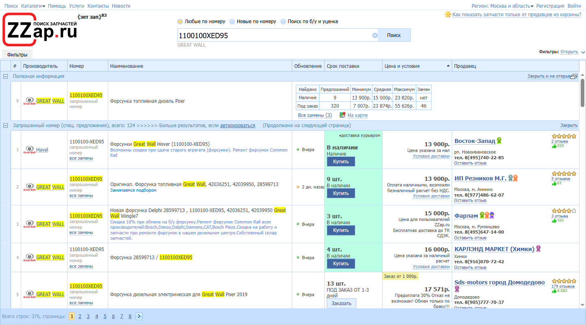 |
| Ozon | От 4 826 ₽, весь разброс 4 841–33 955 ₽. | 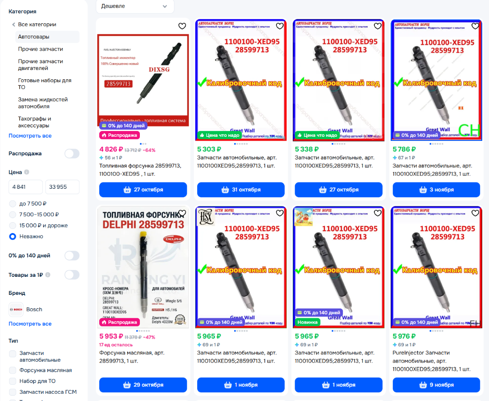 |
| Wildberries | Форсунки от 7 301 ₽ (самая дешёвая карточка за 3 562 ₽ — это клапан, не форсунка), с пометкой «Скидки без границ». | 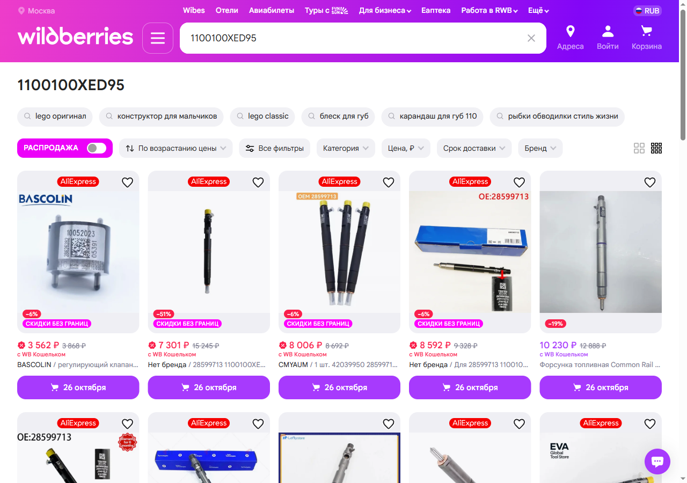 |


Вывод: Российские магазины в наличии держат 13 900–23 820 ₽. На Ozon от 4 826 ₽ предлагают продавцы из-за границы, доставка 2–4 недели. Просим цену за штуку и за комплект из 4 шт.

№40. Топливная рампа
Металлическая трубка-«распределитель»: из неё топливо под давлением идёт ко всем 4 форсункам.
| Где | Что видно | Доказательство |
|---|---|---|
| Магазины в России (zzap.ru) | в наличии: 0 продавцов под заказ: 41 продавец · 5 999–64 463 ₽ |
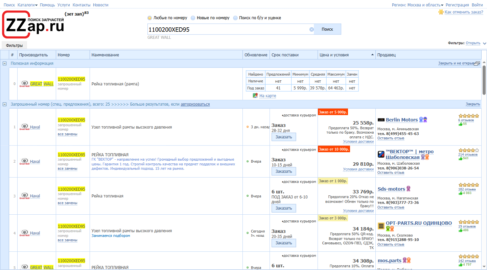 |
| Ozon | От 9 801 ₽, весь разброс 9 803–29 664 ₽. | 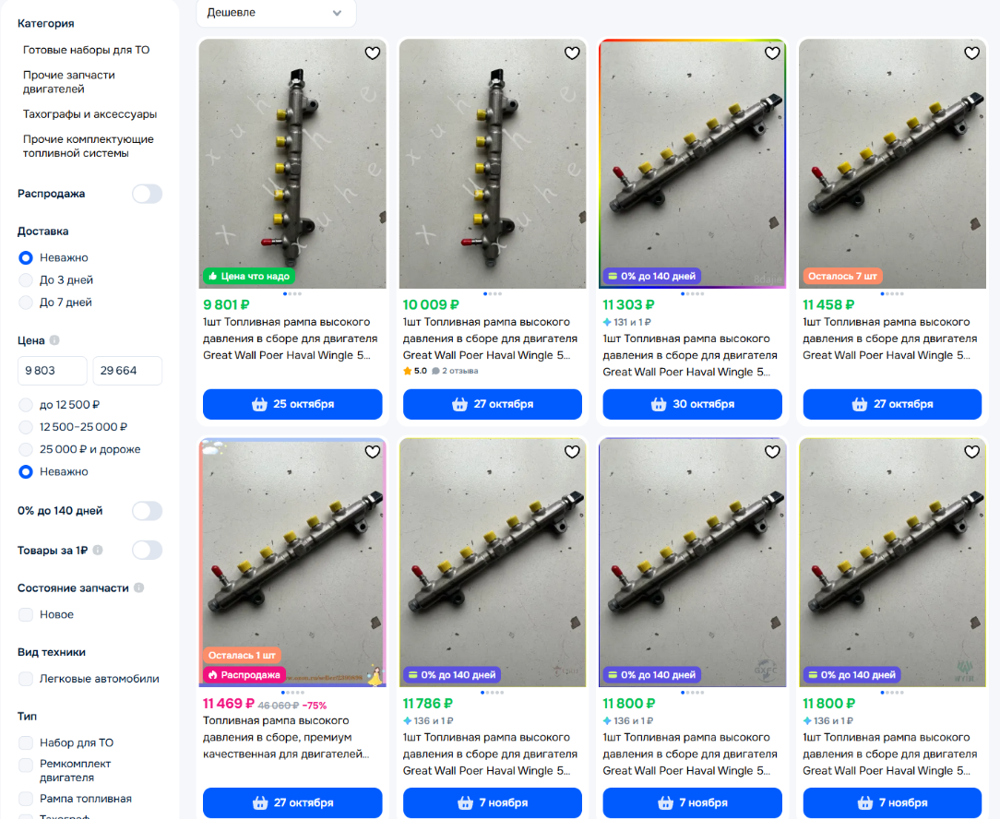 |
| Wildberries | 7 карточек, 7 890–19 976 ₽, все с пометкой «Скидки без границ». | 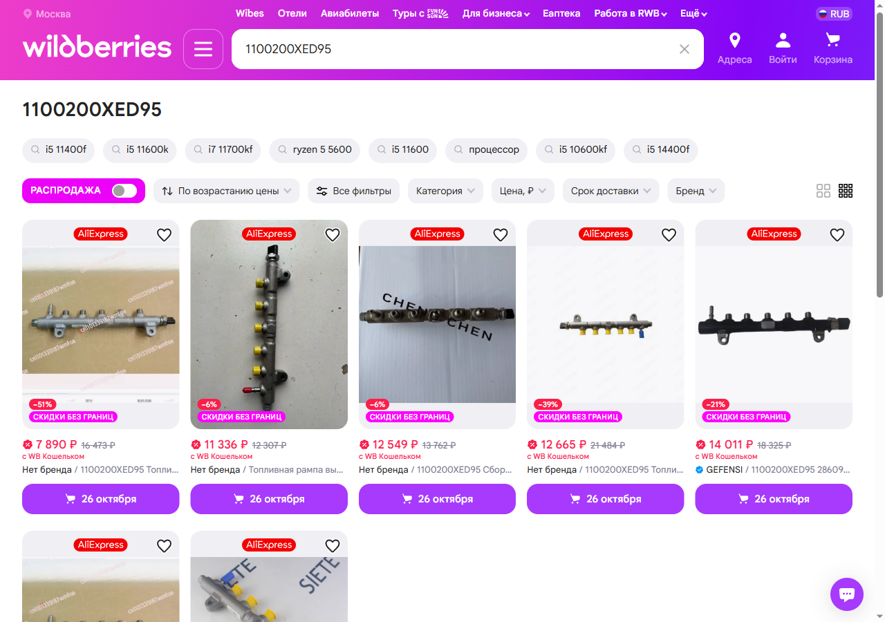 |


Вывод: В российских магазинах в наличии её нет ни у кого (только под заказ, 5 999–64 463 ₽). На WB от 7 890 ₽ предлагают продавцы из-за границы. Просим вашу цену.

№12. Помпа (водяной насос)
Гоняет охлаждающую жидкость по двигателю, чтобы он не перегрелся.
| Где | Что видно | Доказательство |
|---|---|---|
| Магазины в России (zzap.ru) | в наличии: 2 продавца · 10 000–16 492 ₽ под заказ: 213 продавцов · 4 901–26 239 ₽ |
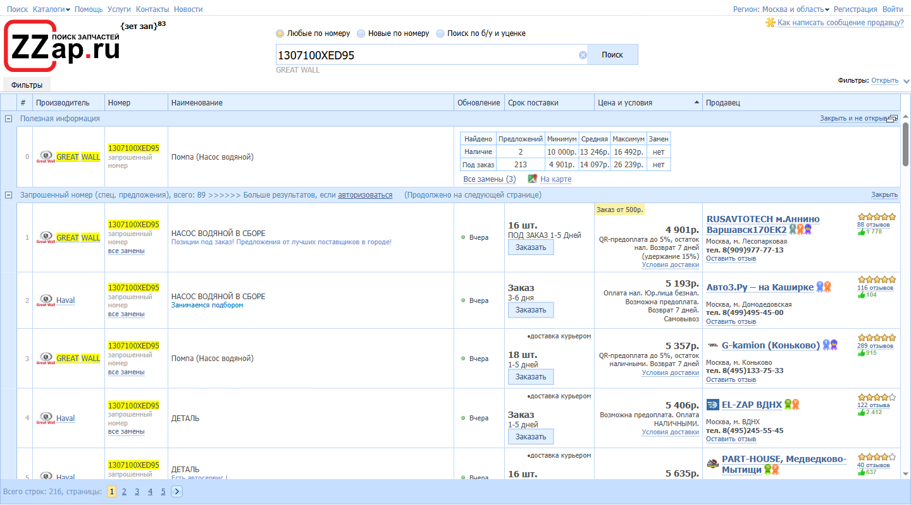 |
| Ozon | От 4 264 ₽, весь разброс 4 359–11 903 ₽. Самые дешёвые — фирмы Gates (это аналог, не оригинал). | 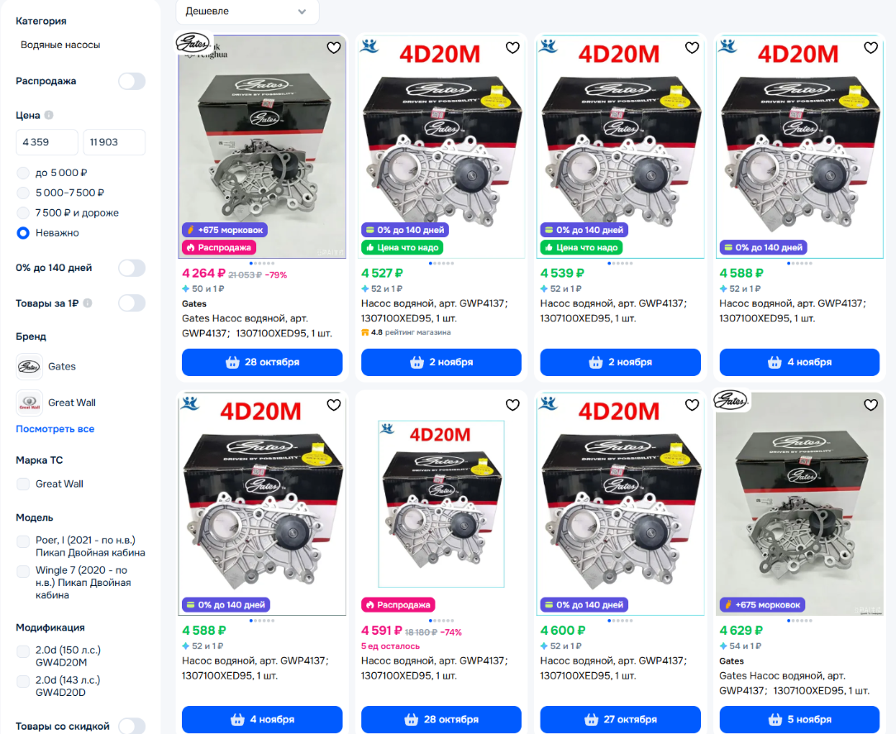 |
| Wildberries | 7 карточек, 7 317–10 245 ₽. | 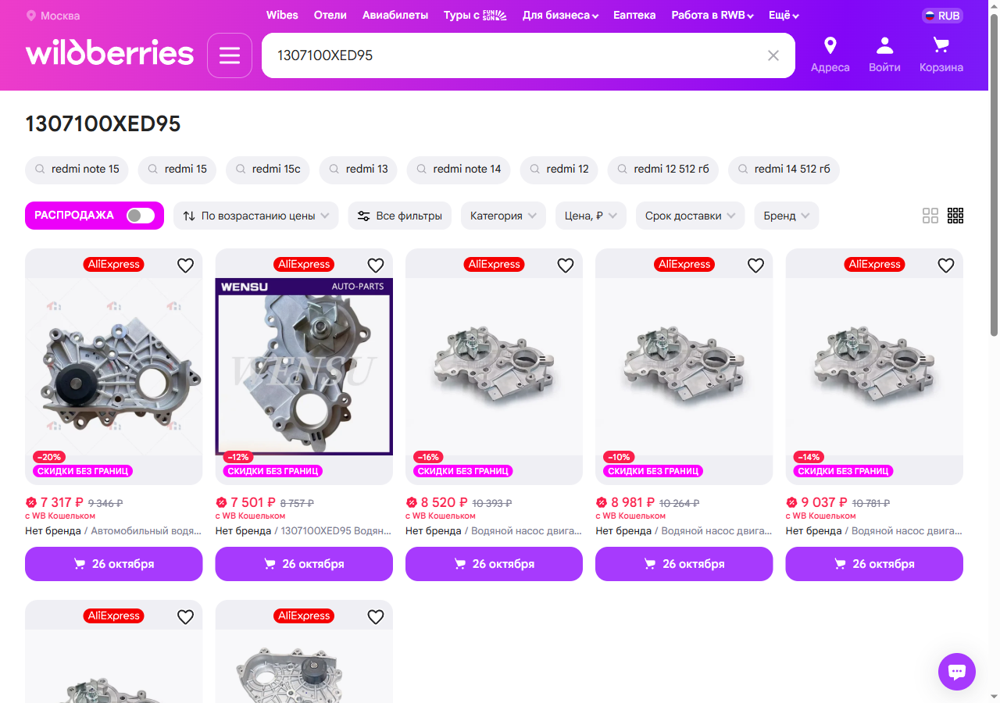 |


Вывод: В российских магазинах в наличии 10 000–16 492 ₽. На Ozon от 4 264 ₽ — в основном аналоги Gates. Просим цену оригинала и аналога.
Ещё одна российская площадка: emex.ru
Emex — большой российский магазин запчастей, везёт со складов. Цена зависит от пункта выдачи в Москве, поэтому ниже — самая низкая и самая высокая цена из двух ближайших пунктов и срок доставки к ним. Снято 16.10.2026 (Москва), на снимке видны цена и срок.
| Деталь | Цена на emex | Срок | Доказательство |
|---|---|---|---|
| №8. ТНВД 1111100XED61 | 50 524 – 53 334 ₽ | 4–8 дней | |
| №66. Форсунка 1100100XED95 | 26 236 – 30 120 ₽ | завтра – 15 дней | 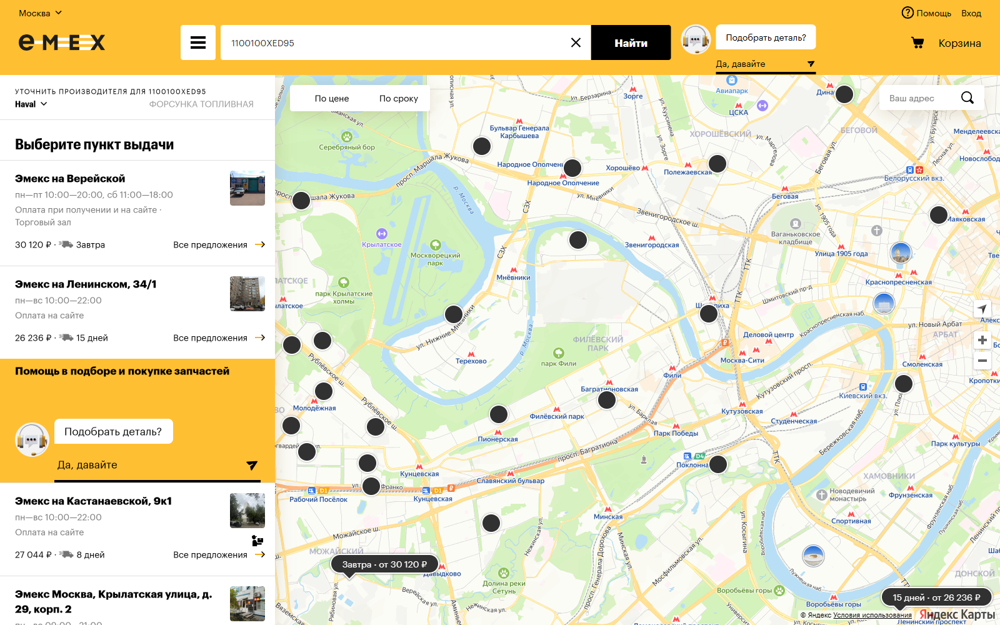 |
| №40. Топливная рампа 1100200XED95 | 44 204 – 56 493 ₽ | 17–52 дня | 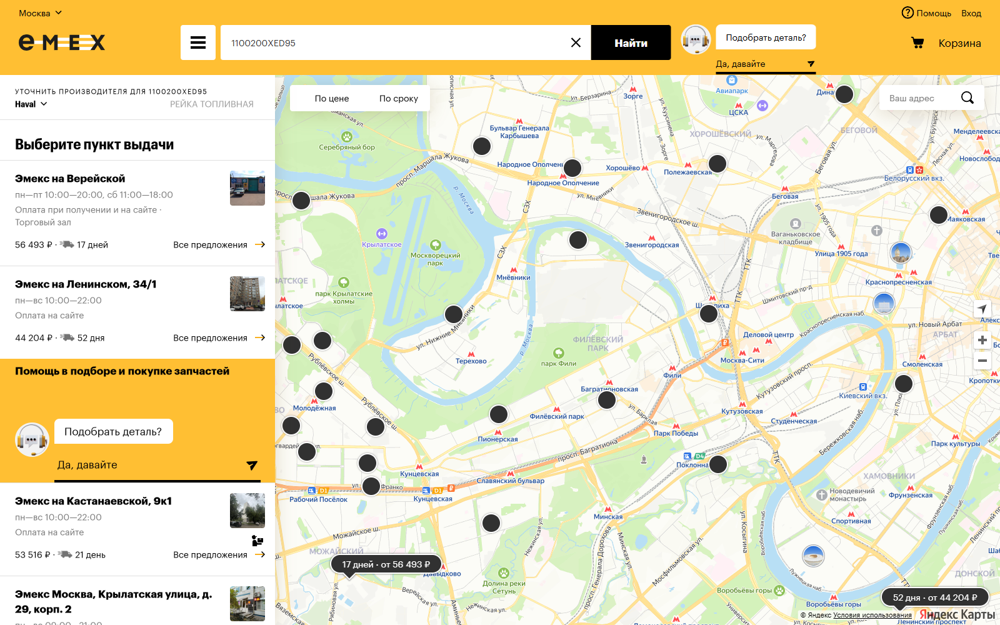 |
| №12. Помпа 1307100XED95 | 6 067 – 6 404 ₽ | 5–9 дней | |
| №19. Вакуумный насос 3541100XED61 | 39 595 – 55 308 ₽ | 42–58 дней | 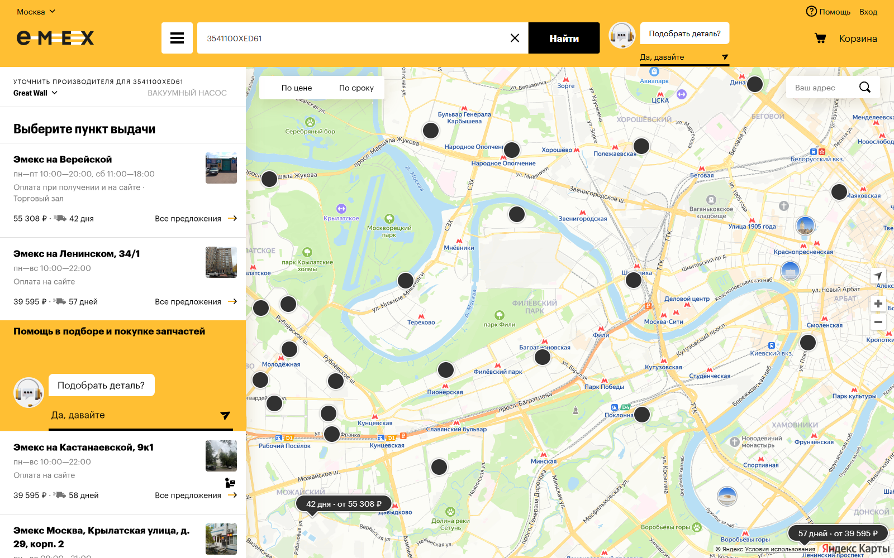 |
| №53. Задний амортизатор 2915100XPW01A | 21 614 – 30 186 ₽ | 42–58 дней | 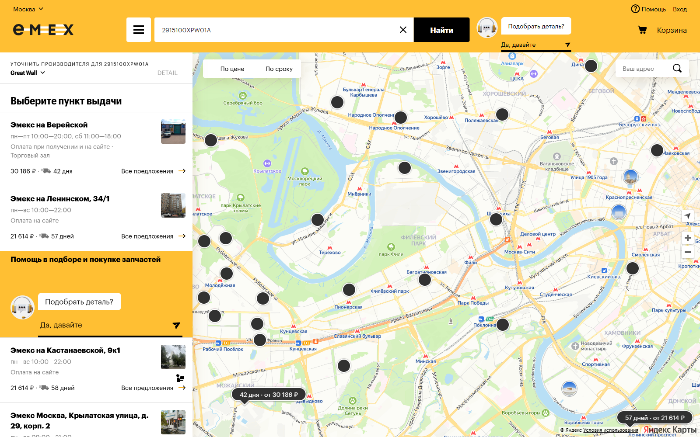 |
| №48. Выпускной коллектор 1008201XED95 | 12 327 – 21 008 ₽ | 5–11 дней | |
| №43. Масляный радиатор 1013100AED95 | 10 895 – 11 501 ₽ | 3–7 дней |


Что видно: на emex почти всё дороже, чем у зарубежных продавцов на Ozon/WB, и сроки долгие (от 3 дней до 2 месяцев). Быстро и недорого emex отдаёт только помпу (6 067–6 404 ₽, 5–9 дней). Для сравнения с zzap: ТНВД на emex 50 524–53 334 ₽ (на zzap в наличии 57 000–70 000 ₽).
Авито: частные продавцы и разборки
На Авито детали продают магазины, разборки и частники, новые и б/у вместе. Поиск по номеру детали, вся Россия, 16.10.2026. Цена за штуку, как в объявлении. Дешёвые цены в основном — б/у с разборок.
| Деталь | Объявлений с этим номером | Цены | Снимок |
|---|---|---|---|
| №8. ТНВД 1111100XED61 | 213 в поиске | 25 000 (б/у) – 57 000 ₽; новые аналоги 41 859 – 57 000 ₽ | 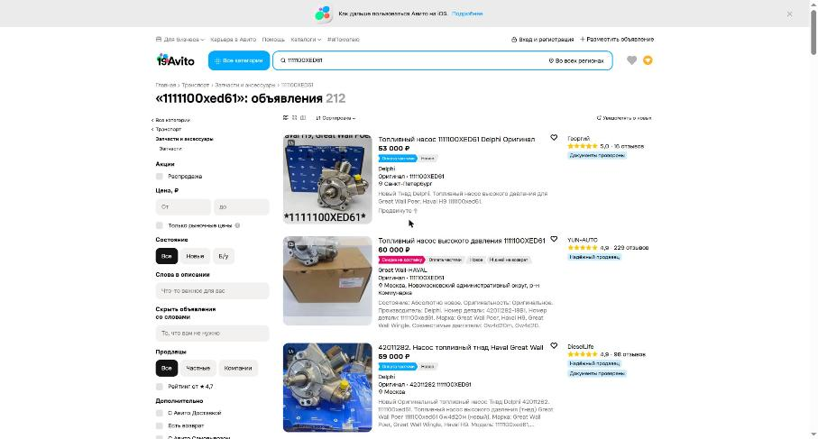 |
| №66. Форсунка 1100100XED95 | 234 в поиске (47 из 50 первых — с номером) | 3 119 – 30 970 ₽, обычно 10 000 – 25 000 ₽ | 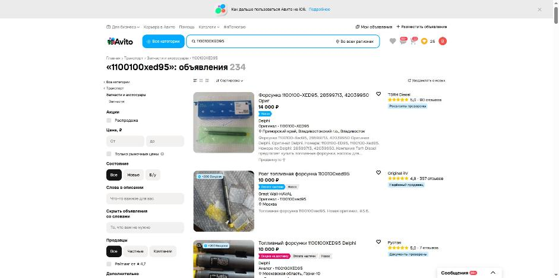 |
| №40. Топливная рампа 1100200XED95 | 4 из 50 первых | 10 000 – 40 000 ₽ | 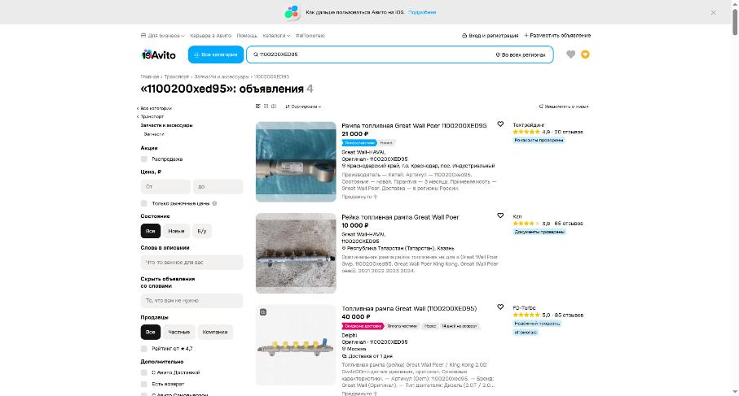 |
| №12. Помпа 1307100XED95 | 13 из 50 первых | 6 500 – 17 091 ₽ | 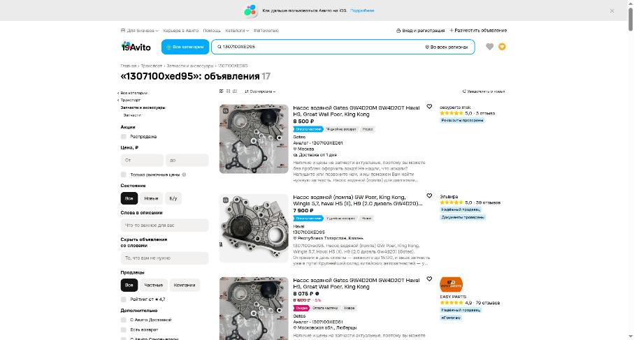 |
| №19. Вакуумный насос 3541100XED61 | 15 в поиске (11 — с номером) | 1 170 – 22 000 ₽, дешёвые — б/у с разборок | |
| №53. Задний амортизатор 2915100XPW01A | 4 | 3 999 – 8 250 ₽ (б/у и новые) | |
| №48. Выпускной коллектор 1008201XED95 | 7 | 6 999 – 15 680 ₽ (в основном разборки, б/у) | |
| №43. Масляный радиатор 1013100AED95 | 3 | 10 730 ₽ (новое, 2 объявления, Санкт-Петербург, 1–2 дня); 12 500 ₽ (новое, Ростов, от 3 дней) |


Что видно: «пустых мест» на Авито нет: вакуумный насос, задний амортизатор и выпускной коллектор там продают, чаще б/у с разборок и дёшево (от 1 170 до 22 000 ₽). Значит, у нас там конкуренция с разборками. Новые детали продают дороже: ТНВД 41 859–57 000 ₽, масляный радиатор 10 730–12 500 ₽ с доставкой за 1–3 дня.
Ещё российские сайты: Автопитер, Exist, Яндекс Маркет
Проверено без входа в аккаунт, Москва (Видное), 16.10.2026. Автопитер — большой оптово-розничный магазин, цены «от» за одну штуку и срок доставки. Таблица показывает самое дешёвое предложение под нашим номером и срок.
| Деталь | Автопитер | Доказательство |
|---|---|---|
| №8. ТНВД 1111100XED61 | оригинал Great Wall от 73 925 ₽ (4 дня); Delphi от 44 638 ₽ (4 дня); другие 42 308–56 673 ₽; из Китая 87 195 ₽ (19 дней) | |
| №66. Форсунка 1100100XED95 | от 24 594 ₽ (4 дня) и от 25 997 ₽ (2 дня) | |
| №40. Топливная рампа 1100200XED95 | от 44 122 ₽ (19 дней, из Китая) и от 46 506 ₽ (21 день) | |
| №12. Помпа 1307100XED95 | от 5 976 ₽ (4 дня); аналоги от 11 707 ₽; из Китая 17 860 ₽ (14 дней) | |
| №19. Вакуумный насос 3541100XED61 | от 19 425 ₽ (21 день) и от 31 817 ₽ (36 дней) | |
| №53. Задний амортизатор 2915100XPW01A | от 12 911 ₽ (25 дней); оригинал «отсутствует в продаже» | |
| №48. Выпускной коллектор 1008201XED95 | от 13 332 ₽ (4 дня); аналоги от 12 354 ₽; другие 16 804 ₽ (4 дня) | |
| №43. Масляный радиатор 1013100AED95 | от 12 641 ₽ (4 дня, оригинал) и от 10 251 ₽ (4 дня) |


Exist.ru: по всем деталям даёт предложения, но показывает цены «крупного опта» (для зарегистрированных клиентов) и в каждой строке две цены — общую и «x 4». Что они значат точно, не выяснено, поэтому в выводы Exist я не беру. Снимки лежат рядом: №8 · №66 · №40 · №12 · №19 · №53 · №48 · №43.


Яндекс Маркет: в моём отдельном браузере по номеру ТНВД точной детали нет (показывает фильтры с похожими номерами), снимок: Маркет, ТНВД. В твоём Chrome (пункт выдачи Развилка, 16.10.2026) поиск по номеру форсунки 1100100XED95 нашёл: оригинал GREAT WALL 27 674 ₽ (1 шт. в наличии, доставка 20 окт) и «от официального дистрибьютора» 36 121 ₽ (24 окт – 9 ноя); из-за рубежа 4 896–15 336 ₽ (доставка 2–8 ноя). По тому же поиску: масляный фильтр оригинал 2 077 ₽ (21 окт), аналог Sumomoto 447 ₽ (послезавтра), из-за рубежа 477–509 ₽ (12–17 ноя); ремень ГРМ 5 286 ₽, ремень генератора 1 526 ₽. Снимков этих цифр нет (расширение Chrome отключилось), цифры считаны с текста страницы.

Не открылись: Автодок, Траст, Автоэвро (адреса поиска не работают).
Почему не в тесте сцепление и опоры двигателя. Сцепление и всё для него нужно только машинам с механической коробкой. Первые Poer продавались только с автоматом (снимок kolesa.ru в разделе 1), механика появилась в 2026 году. Таких машин мало. Опоры двигателя на Ozon уже продают 3–6 карточек от 3 518 ₽ — снимок Ozon, правая · левая · сцепление на Ozon.


4. Все 66 позиций
Фото — из списка Чжана. Колонка «Россия» — табличка «Найдено» с zzap.ru, Москва и область, 16.10.2026. Ссылка «снимок» открывает эту табличку. Под словом решения — коротко почему, если есть что сказать.
| № | Фото | Деталь | Россия (zzap), ₽ | Решение | Доказательство |
|---|---|---|---|---|---|
| 1 |  | Комплект прокладок для капремонта двигателя — · Poer | нет номера | не брать Нет номера — не по чему искать. Спросить номер. | |
| 2 |  | Втулка переднего стабилизатора 2906101XKV3AA · Kingkong | в наличии: 5 продавцов · 205–500 ₽ под заказ: 161 продавец · 207–1 214 ₽ | не брать Резиновая втулка, копеечная. | снимок · zzap |
| 3 |  | Стойка стабилизатора правая 2906604XGW04A · Kingkong | в наличии: 2 продавца · 1 700–3 340 ₽ под заказ: 103 продавца · 1 799–9 780 ₽ | не брать 2 продавца в наличии. | снимок · zzap |
| 4 |  | Стойка стабилизатора правая 2906104XPW01A · Poer | в наличии: 14 продавцов · 500–3 000 ₽ под заказ: 301 продавец · 550–7 832 ₽ | не брать 14 продавцов в наличии. | снимок · zzap |
| 5 |  | Ремень генератора 3701011XED95 · Poer | в наличии: 3 продавца · 1 690–1 800 ₽ под заказ: 163 продавца · 308–5 580 ₽ | не брать Дешёвый расходник. | снимок · zzap |
| 6 |  | Натяжной ролик ремня 3701200XED61 · Poer | в наличии: 10 продавцов · 2 500–6 700 ₽ под заказ: 308 продавцов · 2 481–9 267 ₽ | не брать 10 продавцов в наличии. | снимок · zzap |
| 7 |  | Крестовина карданного вала (размер 30×92) — · Poer | нет номера | не брать Вместо номера указан размер. | |
| 8 | | ТНВД — насос высокого давления топлива 1111100XED61 · Poer | в наличии: 3 продавца · 57 000–70 000 ₽ под заказ: 65 продавцов · 39 030–229 477 ₽ | кандидат | снимок · zzap |
| 9 |  | Топливный фильтр в сборе 1111400XED95 · Poer | в наличии: 5 продавцов · 4 175–7 200 ₽ под заказ: 340 продавцов · 4 090–14 164 ₽ | не брать 5 продавцов в наличии; на zzap — «фильтр грубой очистки». | снимок · zzap |
| 10 |  | Топливный фильтр в сборе (другая версия мотора) 1111400XED96 · Poer | в наличии: 5 продавцов · 8 910–10 233 ₽ под заказ: 365 продавцов · 4 636–18 127 ₽ | не брать 5 продавцов в наличии. | снимок · zzap |
| 11 |  | Элемент топливного фильтра 1111402XED96 · Poer | в наличии: 38 продавцов · 1 215–5 150 ₽ под заказ: 532 продавца · 1 750–9 840 ₽ | не брать 38 продавцов в наличии. | снимок · zzap |
| 12 | | Помпа (водяной насос) 1307100XED95 · Poer | в наличии: 2 продавца · 10 000–16 492 ₽ под заказ: 213 продавцов · 4 901–26 239 ₽ | кандидат | снимок · zzap |
| 13 |  | Шаровая опора нижняя 2904109XPW01A · Poer | в наличии: 5 продавцов · 1 750–3 400 ₽ под заказ: 163 продавца · 2 188–9 875 ₽ | не брать 5 продавцов в наличии. | снимок · zzap |
| 14 |  | Втулка рессоры 2912106XPW01A · Poer | в наличии: 2 продавца · 200–342 ₽ под заказ: 227 продавцов · 124–1 293 ₽ | не брать Копейки. | снимок · zzap |
| 15 |  | Втулка рессоры 2912107XPW01A · Poer | в наличии: 0 продавцов под заказ: 131 продавец · 80–1 176 ₽ | не брать Копейки. | снимок · zzap |
| 16 |  | Нижний рулевой карданчик 3404102XPW01A · Poer | в наличии: 1 продавец · 8 000 ₽ под заказ: 275 продавцов · 2 794–12 110 ₽ | не брать 1 продавец в России (8 000 ₽), но на Ozon 6 карточек от 6 290 ₽, на WB 5 368 ₽. | снимок · zzap |
| 17 |  | Ремень насоса ГУР 3407011XED95 · Poer | в наличии: 1 продавец · 856 ₽ под заказ: 125 продавцов · 887–5 024 ₽ | не брать Дешёвый расходник. | снимок · zzap |
| 18 |  | Насос ГУР (гидроусилителя руля) 3407101APW01A · Poer | в наличии: 1 продавец · 15 000 ₽ под заказ: 135 продавцов · 12 472–33 590 ₽ | не брать 1 продавец в России (15 000 ₽), на Ozon 1 карточка 7 083 ₽. Сверить, есть ли у Poer ГУР: по kolesa.ru усилитель руля электрический. | снимок · zzap |
| 19 | | Вакуумный насос 3541100XED61 · Poer | в наличии: 3 продавца · 4 500–22 000 ₽ под заказ: 47 продавцов · 3 894–26 911 ₽ | кандидат | снимок · zzap |
| 20 |  | Комплект ГРМ (номер фирмы Gates) K0120554 · Poer | в наличии: 6 продавцов · 7 400–12 450 ₽ под заказ: 156 продавцов · 7 210–20 339 ₽ | не брать Чужой бренд, 6 продавцов в наличии. | снимок · zzap |
| 21 |  | Рулевой механизм 3401100XPW01A · Poer | в наличии: 1 продавец · 12 000 ₽ под заказ: 102 продавца · 18 320–135 851 ₽ | не брать В наличии в России — только б/у за 12 000 ₽. Новая — под заказ 18 320–135 851 ₽; на WB 26 764 ₽. | снимок · zzap |
| 22 |  | Задняя рессора 2912102XPW01A · Poer | в наличии: 3 продавца · 12 000–13 500 ₽ под заказ: 52 продавца · 11 673–38 460 ₽ | не брать Тяжёлая — дорогая доставка. | снимок · zzap |
| 23 |  | Рулевой наконечник 3401101XPW01A · Poer | в наличии: 9 продавцов · 700–5 196 ₽ под заказ: 332 продавца · 1 325–7 275 ₽ | не брать | снимок · zzap |
| 24 |  | Механизм подъёма запасного колеса 3105100XPW01A · Poer | в наличии: 2 продавца · 2 889–5 000 ₽ под заказ: 78 продавцов · 2 889–17 430 ₽ | не брать 2 продавца в наличии. | снимок · zzap |
| 25 |  | Фланец передней ступицы 3103101XPW01A · Poer | в наличии: 2 продавца · 3 150–5 870 ₽ под заказ: 137 продавцов · 3 046–12 450 ₽ | не брать 2 продавца в наличии. | снимок · zzap |
| 26 |  | Подшипник передней ступицы 3103100XPW01A · Poer | в наличии: 13 продавцов · 1 490–7 550 ₽ под заказ: 311 продавцов · 1 584–10 210 ₽ | не брать 13 продавцов в наличии. | снимок · zzap |
| 27 |  | Коническая втулка поворотного кулака 3001112XPW01A · Poer | в наличии: 3 продавца · 1 461–3 200 ₽ под заказ: 173 продавца · 552–8 290 ₽ | не брать 3 продавца в наличии. | снимок · zzap |
| 28 |  | U-образный болт (стремянка рессоры) 2912104XPW01A · Poer | в наличии: 1 продавец · 1 225 ₽ под заказ: 276 продавцов · 579–3 600 ₽ | не брать 1 продавец в наличии, дёшево. | снимок · zzap |
| 29 |  | Подвесной подшипник кардана 2200100XPW01A · Poer | zzap: «Мы пока ничего не знаем об этом номере» | не брать Ни одного продавца по номеру. Уточнить номер у Чжана. | снимок · zzap |
| 30 |  | Трос переключения передач 1703300XPW01A · Poer | zzap: «Нет никаких данных» | не брать Ни одного продавца по номеру; только для механики. | снимок · zzap |
| 31 |  | Главный цилиндр сцепления 1608100XPW01A · Poer | в наличии: 1 продавец · 4 500 ₽ под заказ: 52 продавца · 2 900–14 450 ₽ | не брать Только для механической коробки — таких Poer мало. | снимок · zzap |
| 32 |  | Шланг сцепления 1607102XPW01A · Poer | в наличии: 0 продавцов под заказ: 34 продавца · 806–7 960 ₽ | не брать Только под заказ; только для механики. | снимок · zzap |
| 33 |  | Трубка сцепления 1607104XPW01A · Poer | zzap: «Нет никаких данных» | не брать Ни одного продавца по номеру; только для механики. | снимок · zzap |
| 34 |  | Форсунка мочевины (AdBlue) 1205145XPW01A · Poer | zzap: «Мы пока ничего не знаем об этом номере» | не брать Ни одного продавца в России по этому номеру (снимок). Похоже, машин с мочевиной (AdBlue) в России почти нет. | снимок · zzap |
| 35 |  | Патрубок воздушного фильтра 1132101APW01A · Poer | в наличии: 0 продавцов под заказ: 89 продавцов · 7 341–19 037 ₽ | не брать В наличии нет; на Ozon нет, на WB 8 637–9 867 ₽. | снимок · zzap |
| 36 |  | Шланг адсорбера 1130106XPW01A · Poer | zzap: «Мы пока ничего не знаем об этом номере» | не брать Ни одного продавца по номеру. | снимок · zzap |
| 37 |  | Клапан адсорбера 1130110XKU88A · Poer | zzap: «Мы пока ничего не знаем об этом номере» | не брать Ни одного продавца по номеру. | снимок · zzap |
| 38 |  | Шланг интеркулера 1119102XPW01A · Poer | в наличии: 1 продавец · 4 500 ₽ под заказ: 60 продавцов · 3 220–17 627 ₽ | не брать На Ozon много карточек от 1 571 ₽. | снимок · zzap |
| 39 |  | Обратные трубки топливной рампы 1100900XED95 · Poer | в наличии: 1 продавец · 4 000 ₽ под заказ: 30 продавцов · 2 978–7 815 ₽ | не брать 1 продавец в России; на Ozon 4 262 ₽, на WB 3 648 ₽. | снимок · zzap |
| 40 | | Топливная рампа 1100200XED95 · Poer | в наличии: 0 продавцов под заказ: 41 продавец · 5 999–64 463 ₽ | кандидат | снимок · zzap |
| 41 |  | Шланги вентиляции картера 1014220XED96 · Poer | zzap: «Мы пока ничего не знаем об этом номере» | не брать Ни одного продавца по номеру. | снимок · zzap |
| 42 |  | Шланги вентиляции картера 1014220XED95 · Poer | zzap: «Мы пока ничего не знаем об этом номере» | не брать Ни одного продавца по номеру. | снимок · zzap |
| 43 | | Масляный радиатор 1013100AED95 · Poer | в наличии: 1 продавец · 9 480 ₽ под заказ: 216 продавцов · 2 307–14 236 ₽ | кандидат 1 продавец в России (9 480 ₽); на Ozon по номеру пусто, но по названию — та же деталь (1013100XE95) за 6 796 ₽. | снимок · zzap |
| 44 |  | Масляный насос 1011100XED95 · Poer | в наличии: 1 продавец · 15 220 ₽ под заказ: 96 продавцов · 13 474–33 556 ₽ | не брать 1 продавец в России (15 220 ₽); на WB 4 карточки 19 107–32 289 ₽, на Ozon 1 — 33 311 ₽. В России дешевле, чем у зарубежных конкурентов. | снимок · zzap |
| 45 |  | Коленчатый вал 1005100XED61 · Poer | zzap: «Нет никаких данных» | не брать Ни одного продавца по номеру. | снимок · zzap |
| 46 |  | Двухмассовый маховик 1005101XPW01A · Poer | zzap: «Нет никаких данных, вообще никаких» | не брать Ни одного продавца в России по этому номеру (снимок). Сначала уточнить у Чжана, что это за деталь. | снимок · zzap |
| 47 |  | Нижний поддон картера 1009300XED95 · Poer | в наличии: 1 продавец · 4 500 ₽ под заказ: 37 продавцов · 3 377–8 710 ₽ | не брать 1 продавец в наличии. | снимок · zzap |
| 48 | | Выпускной коллектор 1008201XED95 · Poer | в наличии: 1 продавец · 15 000 ₽ под заказ: 107 продавцов · 6 714–13 560 ₽ | кандидат 1 продавец в России (15 000 ₽); на Ozon ничего, на WB 1 карточка 18 528 ₽. | снимок · zzap |
| 49 |  | Комплект сцепления 1601002XPW01A · Poer | в наличии: 2 продавца · 16 200–22 500 ₽ под заказ: 5 продавцов · 19 809–35 348 ₽ | не брать Только для механической коробки — таких Poer мало. | снимок · zzap |
| 50 |  | Опора коробки передач 1706100XPW01A · Poer | в наличии: 3 продавца · 4 680–10 000 ₽ под заказ: 73 продавца · 1 538–11 630 ₽ | не брать 3 продавца в наличии. | снимок · zzap |
| 51 |  | Передний правый привод 2303101XPW01A · Poer | в наличии: 3 продавца · 16 000–42 796 ₽ под заказ: 159 продавцов · 17 142–43 648 ₽ | не брать 3 продавца в России 16 000–42 796 ₽; на Ozon 19 638–34 002 ₽, на WB 14 411–33 943 ₽ — зарубежные конкуренты дешевле. | снимок · zzap |
| 52 |  | Передний амортизатор с пружиной 2905100XPW04A · Poer | zzap: «Мы пока ничего не знаем об этом номере» | не брать Ни одного продавца в России по этому номеру (снимок). Версия XPW04A — видимо, не для российских машин. | снимок · zzap |
| 53 | | Задний амортизатор 2915100XPW01A · Poer | в наличии: 2 продавца · 5 000 ₽ под заказ: 31 продавец · 6 924–24 130 ₽ | кандидат | снимок · zzap |
| 54 |  | Правый передний поворотный кулак 3001103XPW01A · Poer | в наличии: 2 продавца · 11 000–13 582 ₽ под заказ: 113 продавцов · 8 386–29 276 ₽ | не брать 2 продавца в России 11 000–13 582 ₽; на Ozon 4 карточки 15 032–24 524 ₽, на WB нет. Россия дешевле. | снимок · zzap |
| 55 |  | Подшипник передней ступицы 3103500XGW04A · Kingkong | в наличии: 6 продавцов · 5 400–10 641 ₽ под заказ: 375 продавцов · 5 314–25 094 ₽ | не брать 6 продавцов в наличии; Kingkong в России мало. | снимок · zzap |
| 56 |  | Левый верхний рычаг 2904101XPW01A · Poer | в наличии: 4 продавца · 6 000–7 970 ₽ под заказ: 216 продавцов · 2 460–17 253 ₽ | не брать 4 продавца в наличии. | снимок · zzap |
| 57 |  | Передний правый привод 2303113XGW04A · Kingkong | в наличии: 2 продавца · 26 724–26 800 ₽ под заказ: 37 продавцов · 23 245–49 411 ₽ | не брать 2 продавца в наличии; Kingkong в России мало. | снимок · zzap |
| 58 |  | Опора (подушка) двигателя левая 1001100XP6PXA · Poer | в наличии: 1 продавец · 3 000 ₽ под заказ: 16 продавцов · 1 616–13 629 ₽ | не брать 1 продавец в наличии; на Ozon 3 карточки от 5 106 ₽. | снимок · zzap |
| 59 |  | Опора (подушка) двигателя правая 1001200XP6PXA · Poer | в наличии: 3 продавца · 2 156–3 000 ₽ под заказ: 27 продавцов · 2 156–19 110 ₽ | не брать 3 продавца в наличии; на Ozon 6 карточек от 3 518 ₽. | снимок · zzap |
| 60 |  | Масляный фильтр 1017110XED95 · Poer | в наличии: 62 продавца · 140–2 500 ₽ под заказ: 524 продавца · 180–4 345 ₽ | не брать 62 продавца в наличии — рынок забит. | снимок · zzap |
| 61 |  | Передний тормозной диск 3501104XPW01A · Poer | в наличии: 17 продавцов · 3 000–17 824 ₽ под заказ: 472 продавца · 2 255–20 420 ₽ | не брать 17 продавцов в наличии. | снимок · zzap |
| 62 |  | Задний тормозной диск 3502102XPW01A · Poer | в наличии: 4 продавца · 2 970–6 001 ₽ под заказ: 84 продавца · 2 036–17 350 ₽ | не брать 4 продавца в наличии. | снимок · zzap |
| 63 |  | Передние тормозные колодки 3501119XPW01A · Poer | в наличии: 27 продавцов · 1 000–8 346 ₽ под заказ: 423 продавца · 500–14 264 ₽ | не брать 27 продавцов в наличии. | снимок · zzap |
| 64 |  | Задние тормозные колодки 3502139XPW01A · Poer | в наличии: 10 продавцов · 750–6 409 ₽ под заказ: 312 продавцов · 743–10 402 ₽ | не брать 10 продавцов в наличии, на zzap подписаны как колодки Tank 300. | снимок · zzap |
| 65 |  | Шаровая опора верхняя 2904100XPW01A · Poer | в наличии: 4 продавца · 2 600–4 000 ₽ под заказ: 147 продавцов · 2 300–8 840 ₽ | не брать 4 продавца в наличии. | снимок · zzap |
| 66 | | Форсунка дизельная 1100100XED95 · Poer | в наличии: 9 продавцов · 13 900–23 820 ₽ под заказ: 320 продавцов · 7 007–55 626 ₽ | кандидат | снимок · zzap |


5. Что исправлено при второй проверке
- Масляный радиатор (№43): по нашему номеру на Ozon пусто, но по названию продают похожие детали под другими номерами (6 796 и 4 692 ₽). Что это та же деталь, не доказано — сначала сверить номер с Чжаном. Из «пустых мест» убран.
- Задний амортизатор: раньше было «на Ozon ~12 карточек, 7,9–10,4 тыс.». Неверно — это были проставки для клиренса, а не амортизаторы. Амортизатора на Ozon нет вообще. Он стал кандидатом №1.
- Сцепление убрано из теста: Poer в основном с автоматом.
- Форсунка на Ozon: было «5,3–21 тыс.», по снимку — от 4 826 до 33 955 ₽.
- Помпа на Ozon: было «до 17 тыс.», по снимку — 4 359–11 903 ₽.
- Вакуумный насос: на Ozon нашей детали нет (карточка — другой, электрический насос). Зато на WB есть 2 карточки по 7,5–7,9 тыс.
- Убрано без доказательства: цена ТНВД на eBay ($622), «zzap называет маховик коленвалом», оценка «15–20 тыс. машин на дорогах».
- emex.ru: сначала был убран (в заголовке страницы ТНВД стояла явная ошибка цены), потом проверен заново и внесён со снимками (раздел 3).
6. Что не проверено
- Крестовина кардана (№7): вместо номера указан размер 30×92 — искать не по чему, спросить номер у Чжана.
- Ozon и WB: по номеру детали проверено 22 позиции из 58 с номером (детали теста, дорогие детали и 10 деталей раздела 4). Остальные 36 — в основном дешёвая мелочь, тяжёлые детали и неясные позиции — на Ozon и WB не смотрели.
- Как часто у Poer ломаются масляный радиатор и коллектор — не проверяли.
- Ozon для №48 (коллектор) смотрел робот без адреса доставки: по номеру и по названию пусто; на Авито, emex и Автопитере коллектор есть.
- Продажи по плагину MPSTATS: на Ozon — 12 деталей, на WB — 3 расходника; остальные детали не смотрели. У части цифр нет снимка, это написано в таблице.
- Цены у официального дилера.
- Себестоимость: курс, доставка, пошлина — считаем, когда Чжан пришлёт цены.
7. Вопросы Чжану
Про деньги и формат пока не спрашиваем (решение 16.10.2026).
Словарик
- OE-номер
- Заводской номер детали, как артикул. По нему детали ищут и покупают: название может отличаться, а номер — нет. Например, 1111100XED61 — это ТНВД именно для Poer.
- zzap.ru
- Сайт, который собирает предложения сотен магазинов запчастей в Москве и области. Вверху страницы — табличка «Найдено»: сколько продавцов и какие цены (минимум, средняя, максимум).
- «В наличии» и «под заказ»
- «В наличии» — деталь уже лежит на складе в России, отдадут за 0–2 дня. «Под заказ» — магазин сам её где-то закажет, ждать от нескольких дней до 2 месяцев.
- Аналог
- Такая же деталь, но не с завода Great Wall, а от другой фирмы (например, Gates, LUK). Обычно дешевле.
- «Скидки без границ» на WB, пометка «AliExpress», доставка через 2–4 недели на Ozon
- Это товары, которые едут из-за границы, обычно из Китая. То есть продавцы из-за границы уже продают эти детали россиянам напрямую.
- Дешёвая мелочь «в коробку»
- Деталь стоит 100–3 000 ₽, и её продают десятки магазинов. Отдельно возить невыгодно: заработок с штуки — сотни рублей, а доставка и хлопоты те же. Зато в одной коробке с дорогими деталями она почти ничего не стоит в доставке (как жвачка у кассы).
- Wordstat
- Сервис Яндекса: сколько раз за месяц люди в России искали фразу.